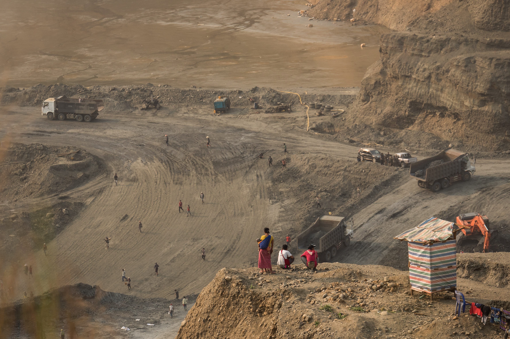
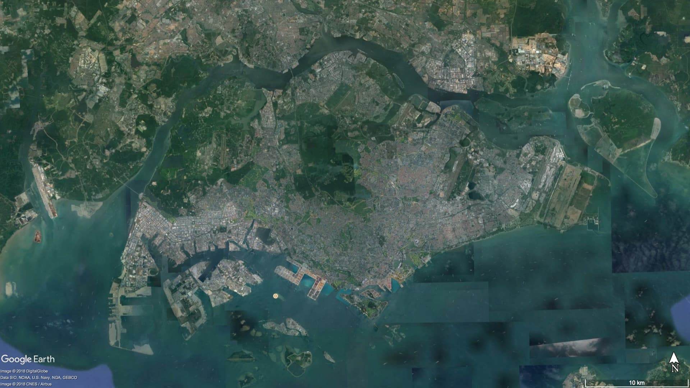
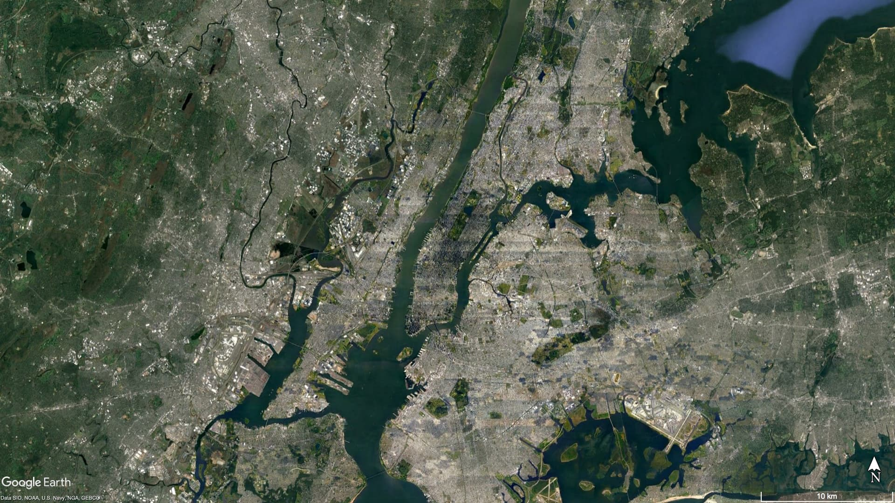
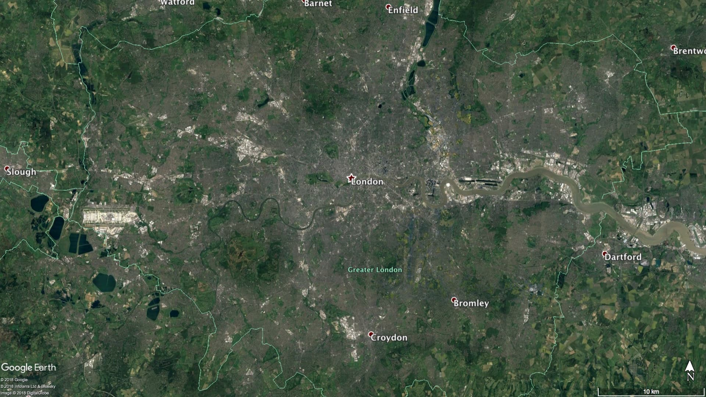
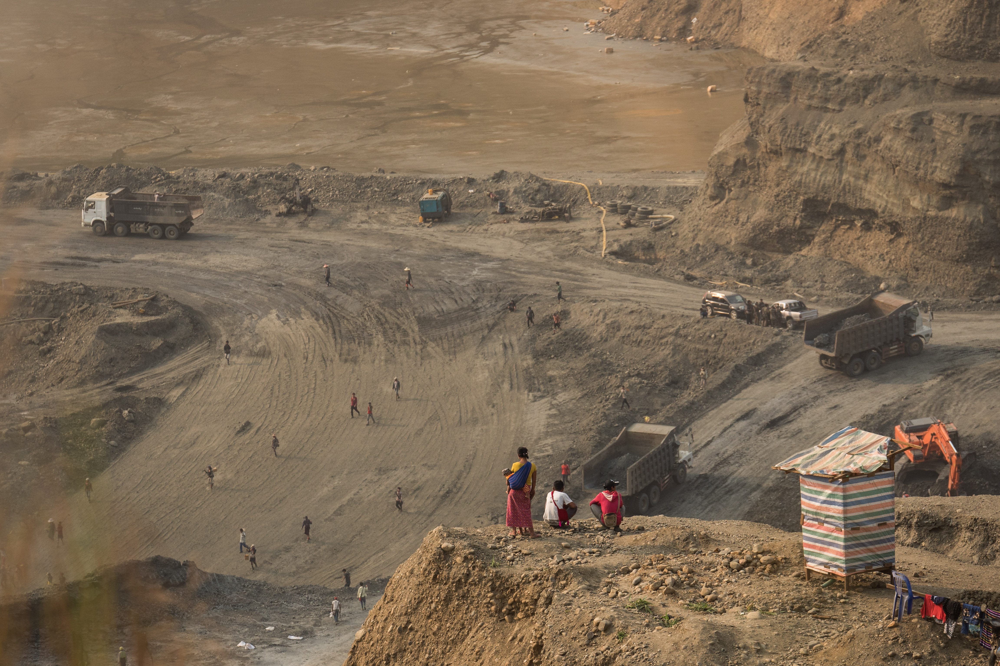
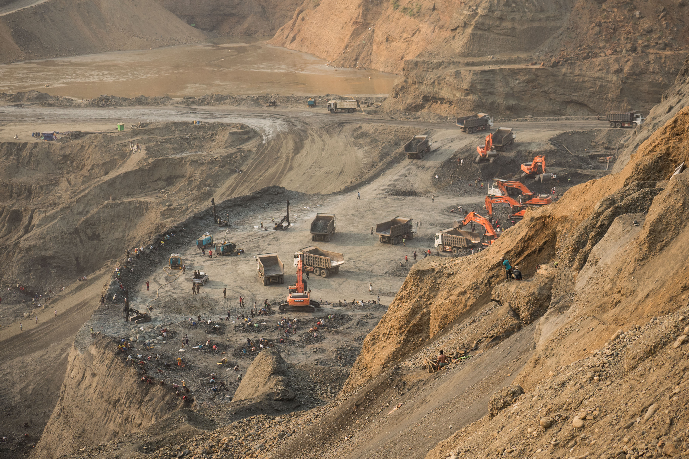

Jade mining in Hpakant. Photo courtesy of Tin Htet Paing for NRGI.
As a teenager in the late 1990s, Roi Awng remembers seeing tigers and other wild animals on mountains covered by deep green forest around her village in the Hpakant region, one of the northernmost parts of Myanmar.
But the tigers and wild animals have fled.
Two decades later, the landscape has undergone a vivid transformation. The forest is now a barren landscape, scarred by deep mining pits. The 32-year-old Kachin woman says many bright yellow trucks traverse the terrain and wheel loaders scoop out earth in a daily search for jade. Mining waste is improperly disposed of or towers in mounds hundreds of feet high. Sources of water and fisheries in Hpakant, the jade-rich area where her village is located, are polluted. Outside town, mountains are torn apart. Open pits are fenced with galvanized iron sheets.
Hpakant, an isolated area four hours by winding road from Myitkyina, the capital of Kachin, produces the world's highest quality jade, worth billions of dollars annually. Jade exploration and mining changes its ground-level visual reality every week. The local motorcycle driver I used on my visit is intimately familiar with the area. Nonetheless, he got lost multiple times amid the deep mining pits.

Landscape around Hpakant. Photo courtesy of Tin Htet Paing for NRGI.
The region is also the epicenter of a convoluted, decades-long conflict between Myanmar's military and the Kachin Independence Army (KIA), one of the most powerful ethnic armed groups in the country. The armed forces and the KIA profit from concession fees and informal taxes imposed on mining companies.
In 1994, the KIA signed a ceasefire agreement with the then-ruling military junta, halting the ongoing conflict and opening up the region to mineral extraction. Larger-scale mining coincided with the resumption of armed clashes between the military and the KIA in 2011. During this conflict, the KIA lost much of its influence as the military gained more ground, leading to increased government control over mining licensing. The government bars foreigners from traveling to Hpakant, curtailing external scrutiny.
The leftovers from the take of the companies, the military and the KIA are divided between locals, itinerant informal miners and hand-pickers who migrate to Hpakant from different impoverished regions across the country, mainly Rakhine state. Census data for 2014 suggests that Hpakant had a total of 312,278 inhabitants. While the actual population might have changed from that figure due to constant flux in the region, local lawmakers and activists estimate nearly 300,000 of Hpakant’s residents are migrant miners, working either legally or illegally. They also said very little benefit from the jade trade eventually trickles down to local communities.
The actual size of Myanmar's jade industry is hard to estimate and research by various organizations present a wide range of figures. Whatever the precise figure is, the environmental and social costs are tangible, stark and visually obvious.
Satellite image of Hpakant versus other major cities globally at the same scale

 |
 |
| Hpakant | Yangon |
|  |  |
| Singapore | Hong Kong |
|  |  |
| New York | London |
It is not uncommon for residents like Roi Awng to be forced off their land to make way for company activity. Roi Awng’s village, where she has resided since 1996, has been moved twice within the Ngo Pin area, first in 2009 and then again in 2015.
According to Extractive Industries Transparency Initiative report data for the 2015-2016 fiscal year, nine private companies were awarded mining licenses to operate between 2011 to 2015 in Ngo Pin. In late 2015, a mining company that operated near Roi Awng’s village provided her family 40 million kyats (approximately USD 31,000 at the time) to relocate. (The village is not named in this article at her request due to fears of retaliation.) Using heavy loads of waste rock, the company flattened an area for villagers to relocate to and built roads for their own vehicles to drive to the mining sites.
Satellite imagery of Mopin village (2013 and 2016)Mining sites around Ngo Pin. Photo courtesy of Tin Htet Paing for NRGI.
Locals from Hpakant I talked to during my trip in March 2018 said they had also been relocated multiple times. They say compensation rates are often arbitrary, if provided at all.
Thayagone, another village in Hpakant, has moved from its original location three times between 1992 and 2018. With some 200 households totaling over 700 residents, the village now sits between two mountains and in close proximity to deep mining pits. When residents had to move for the second time in 2007, each household was compensated between 1.5 and 3 million kyats (USD 1,150-USD 2,300) depending on the condition of their houses. They had little leverage for negotiation: most families depend on hand-picking potentially valuable stones from the waste dumps of mining companies for livelihood. A number of scavengers I spoke to during my trip said that it had been years since they last found a stone that was worth more than a million kyats.
Satellite imagery of Thayagone and Thekegone villages (2013 and 2016)
Thayagone residents looking over mining operations. Photo courtesy of Tin Htet Paing for NRGI.
Thekegone village now faces the danger of landslides as jade mining takes place at its foothills. Photo courtesy of Tin Htet Paing for NRGI.
Satellite imagery of Kahtan village (2013 and 2016). Residents moved to this location (right) on a heap on mine tailings in 2009, from the foothills of a mountain. Jade companies compensated the families arbitrarily. The village of Thekegone, not far from Thayagone village, was relocated about 10 years ago and is situated high on a mountain. Mining companies operate right at the base of this mountain and residents are now being asked to move again. About 20 houses collapsed along the slope in early 2018 because of a landslide. I saw small parts of the mountain edge falling off as I hiked up the mountain. It was evident: the deteriorating landscape posed imminent danger to the residents, who have yet to reach an agreement with mining companies on relocation compensation packages.
Hpakant landslide video by Zaw Moe Htet for NRGI.
The standard size for each jade mining plot for private companies in Myanmar is 1 acre. Ostensibly, the government has set this size limit to prevent large-scale mining. However, companies operating in Myanmar's jade sector bypass this restriction by acquiring several adjacent licenses. For instance, EITI data for the 2015-2016 fiscal year shows that the Samar area in Lone Khin region has a total of 70 valid licenses. They are held by only two companies, Saung Tar Yar Star and Phu Sha Star, which have 50 and 20 licenses, respectively. All of the licenses were granted in February 2016 for a period of three years and expired in February 2019.
The size limit has also made it impossible for jade producers to design and operate their mines in a safe and responsible manner. The small size of individual licenses means that companies do not manage their waste onsite.
There are 10 government-designated waste sites in Hpakant, an inadequate number to support the amount of earth the companies move every day. These sites are far from the mines and dumpers face little monitoring: it is common for trucks to offload their content wherever convenient.
Heaps of waste in Hpakant loom high. Dynamite explosions and heavy rain can cause these mounds to collapse, triggering large-scale landslides. These now happen frequently in Hpakant. Several landslides over the past years have buried hundreds of formal and informal workers hired by mining companies alive. Compilation of casualties as reported by local and international media between January 2015 and July 2018 showed that there were at least 245 deaths during that period. The actual number of dead is likely much higher. In November 2015, a collapse at Kan Hkar village claimed at least 113 lives. Another 100 workers whose bodies were never found were recorded as "missing."
Hpakant landslide video by Zaw Moe Htet for NRGI.
Satellite imagery of Khan Khar village (2013 and 2016)Environment takes uncalculated toll
Mining waste is also dumped onto the banks and directly into of the Uru Creek and its tributaries, which run through the heart of Hpakant. U Tint Soe, the lower house representative for Hpakant, and Ko Naung Latt, a local environmental activist, claim that over a dozen tributaries have disappeared and that the floor of the Uru has risen over 20 feet since the 1990s as a result of dumping. Flooding of villages along the creek during the monsoon season, which runs from June to October, is now common.
"Back in the days, we could see rocks at the floor of the Uru through its crystal clear water. Fish were abundant," U Tint Soe said.
One immediate consequence of this pollution is access to clean water. There are only one or two places left where the water is still relatively clear, according to villagers interviewed during my trip. Scarcity of groundwater, especially in the areas that villages are relocated to, means that all locals have to resort to using rainwater stored during the monsoon for the rest of the year. While some families could manage for themselves, some get water donated by jade mining companies as part of their social initiatives. Others have to buy it from other locals aiming to make a profit. A family of three uses at least two units of water every day, which can cost them 4,000 kyats (USD 2.60). To put that in perspective, the official minimum wage of an adult is 4,800 kyats. Additionally, research on Hpakant water and air quality is urgently needed, according to Ko Naung Latt.
The Myanmar government has suspended new licenses and renewal of existing ones since July 2016. However, the land in Hpakant is already so barren that it may take decades to rectify the environmental damage.
My motorcycle driver pointed at some of the few remaining mountains near a mining site and said, "See all the mountains there? They might all be gone by the time you come here again."
Roi Awng told me during my interview with her that she is anxious about Hpakant's future and another possible relocation. "Nobody knows when we will have to move again to make way for another mine," she said.
Tin Htet Paing is a freelance journalist and photographer based in Yangon, Myanmar. She previously worked as a current affairs reporter for The Irrawaddy News, a local bilingual news organization, from 2014 to early 2018. She has also contributed to Reuters, Al Jazeera’s 101 East, and Roads & Kingdoms as a freelancer.
She is solely responsible for the content of this article, which does not represent the views or work of the Natural Resource Governance Institute (NRGI).